Job Scalper aggregates remote tech roles, scores every one against your résumé, and writes a tailored application in one tap — so you only spend time on the jobs that actually fit.
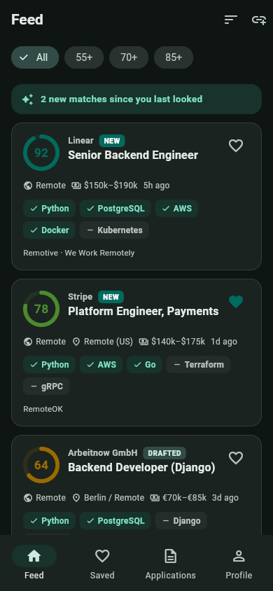
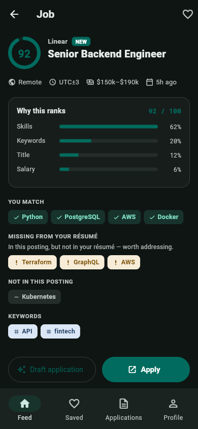
From finding the role to sending the application to landing the offer.
Instead of a keyword search, get one ranked feed. Every posting is scored against your profile, with matched skills, salary, and remote status right on the card.
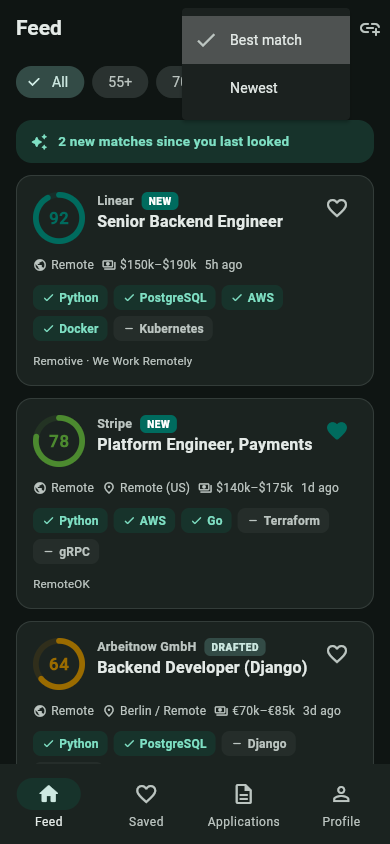
No black box. See the score broken into skill coverage, title match, keywords, and salary — and precisely which skills the role wants that your résumé is missing.
Generate an application written for that job. Choose a tone, regenerate on demand, and read the honest “stretch claims” note where the AI flags anything it inferred — so you verify before you send.
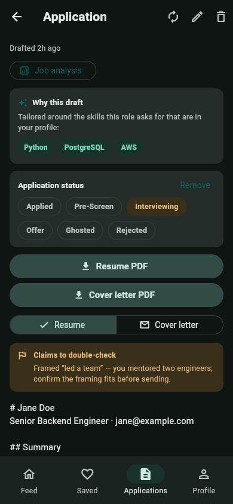
Paste a job link and Job Scalper fetches, parses, and scores it. If the page is a JavaScript-only apply form, just paste the description text instead — you still get a scored posting to draft against.
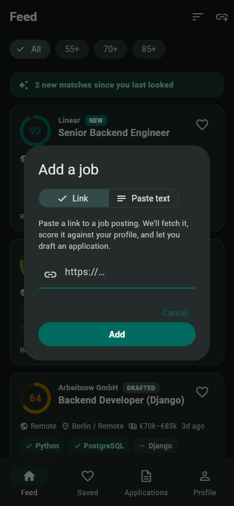
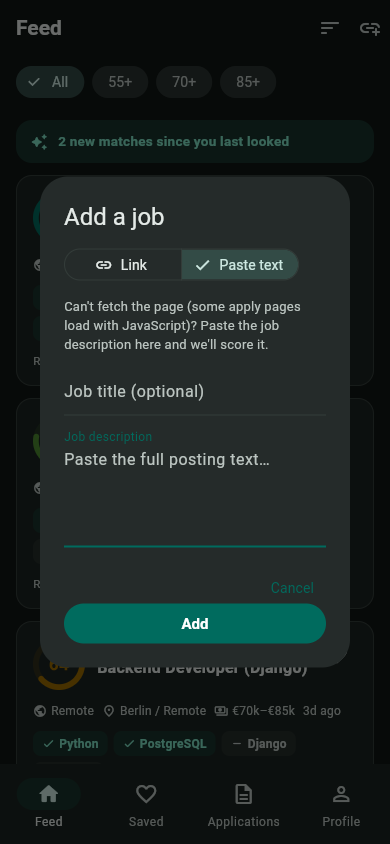
We parse it into a structured profile — your titles, skills, and keywords — and you pick the boards to watch.
Jobs stream in scored against you. Get a push notification the moment a high-scoring match appears.
Generate a tailored application, apply, and move it through your pipeline — applied to offer.
Every application flows through a funnel — applied, interviewing, offer, rejected, ghosted — so you can see your interview rate, offer rate, and where things stall. Job hunting, measured.
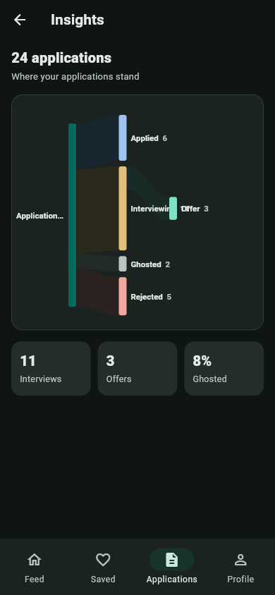
A clean Material 3 experience, fully realized end to end.
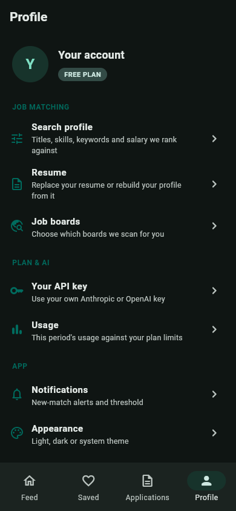
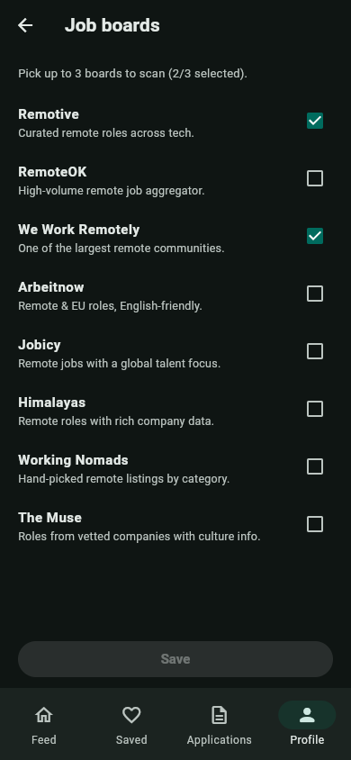
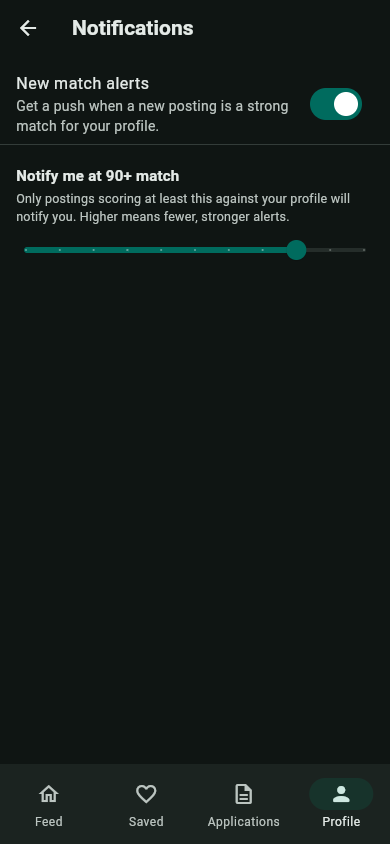
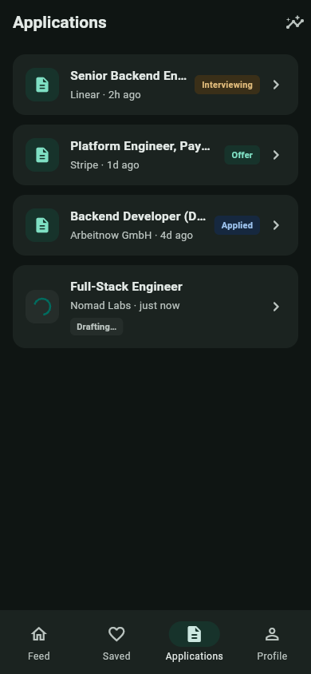
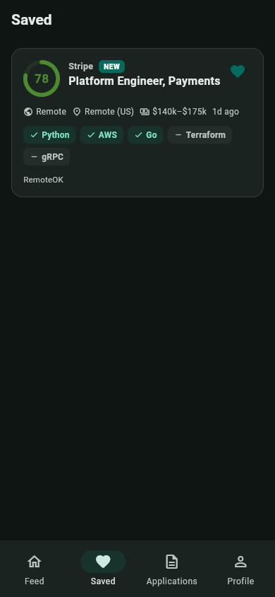
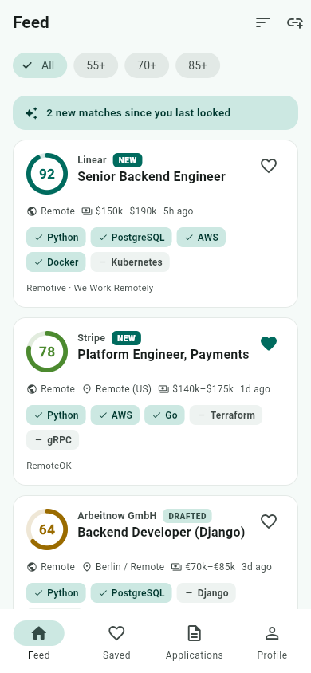
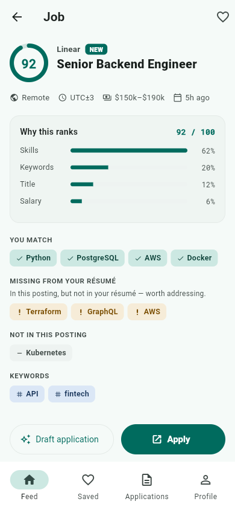
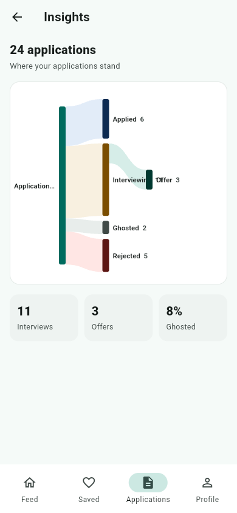
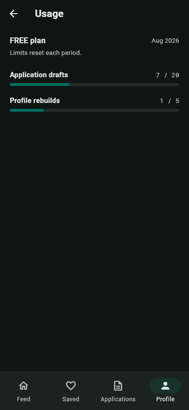
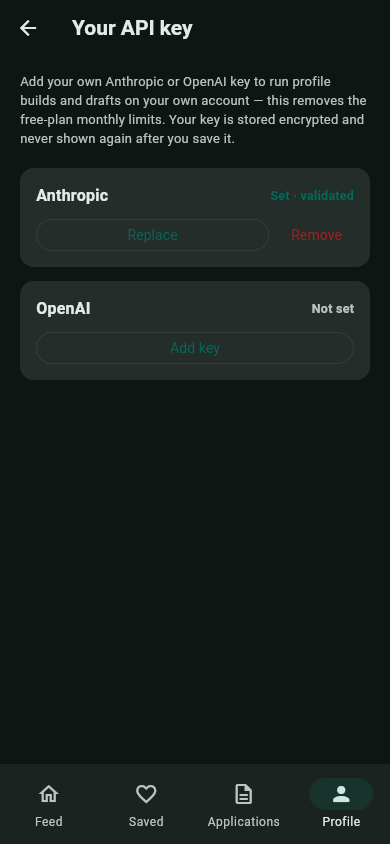
A production-shaped, multi-tenant product — mobile app, async API, background worker, and admin console.
Let AI rank the market and write your applications, so you can focus on the interviews that matter. The app is on its way — check back shortly.